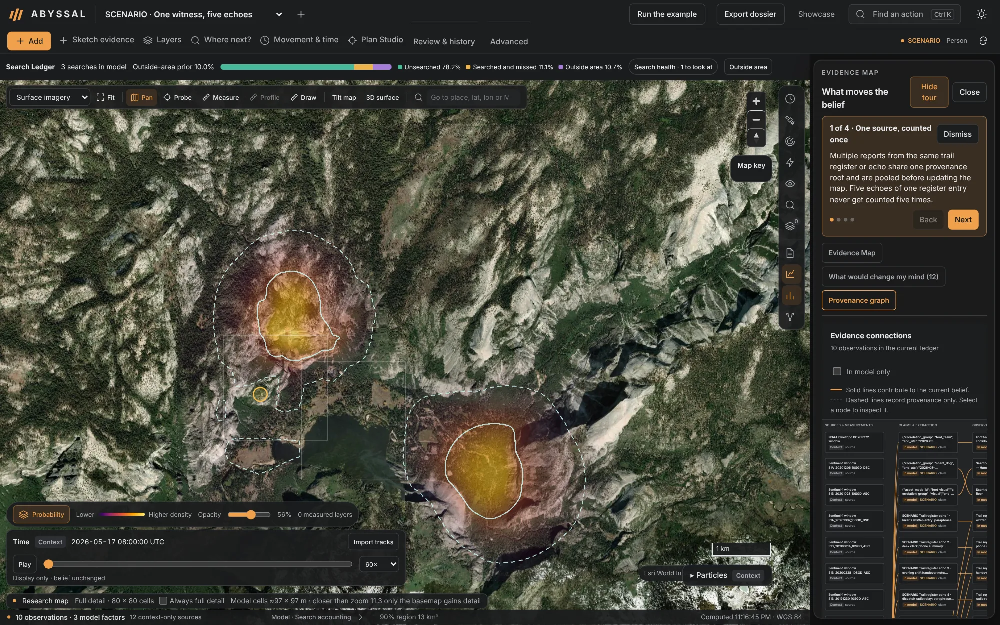
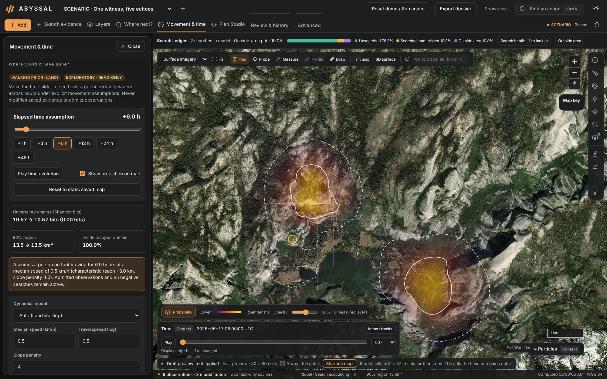
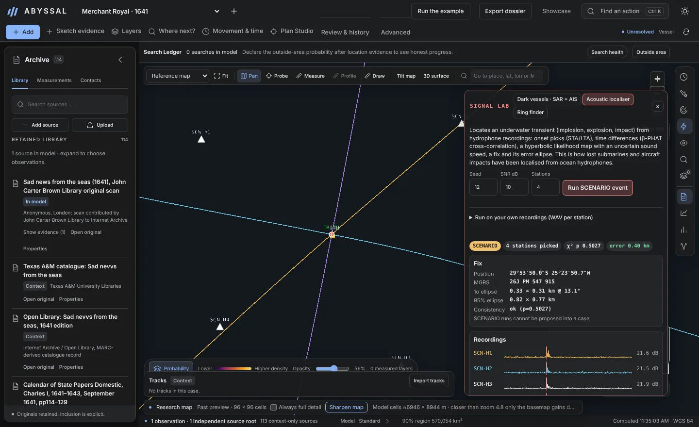
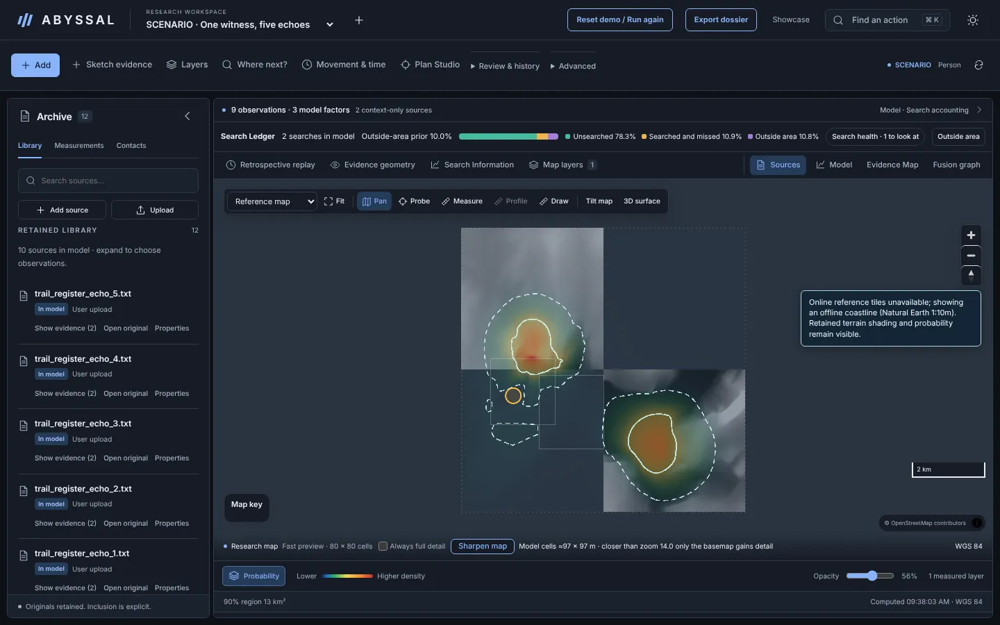

When something is lost, the hardest part of the search is rarely the hardware. It is reasoning: hearing "we covered 80% of the area" as "we are 80% done", counting five retellings of one sighting as five witnesses, repeating a failing sensor over the same ground, and forgetting that every empty search inside the box makes it likelier the box was wrong.
ABYSSAL replaces those habits with explicit arithmetic, unbroken provenance and human-admitted evidence. This series explains it from every side: what it looks like, the mathematics under every pixel, the physics of its detectors, the decisions it supports, and the times it refused to give an answer.
The series
Read in order, or jump to what you care aboutFinding what is lost: a tour of ABYSSAL
A guided walk through a Bayesian search workbench: what you see in the first ten seconds, what each panel is for, and why the map never moves unless a person says so.

A map that refuses to lie
A probability heatmap is an argument, and most of them cheat: rainbow ramps that invent ridges, sea-coloured low ends, resolution they do not have, and context smuggled in as evidence. How ABYSSAL's interface is designed so that what you see is exactly what the model believes.

The arithmetic of not finding
Negative evidence, the outside share, positive clues that cannot double-count, correlated misses and information in bits: the mathematics under every pixel of the map, with a grid you can search yourself.

Five echoes, one witness
Why five reports that trace back to one source must count once, how ABYSSAL pools them, and why the same mistake quietly breaks intelligence assessments, risk models and machine-learning explanations.

Where next, and when to stop
Optimal effort is water poured into a probability landscape. Turning bits into money tells you what an hour of searching is worth, and the same arithmetic tells you, honestly, when to go home.

Signals from the deep
Kelvin's 19.47°, a ship that appears hundreds of metres from where it is, hydrophones that hear an implosion across an ocean, and the one rule that keeps clever detectors from fooling the map.

The operating picture
Live aircraft and ships, satellites and their swaths, wind, rain and earthquakes, a globe you can fly in from orbit, and a kit of field tools: what a search tool looks like when someone has to live in it all day.

Three cases, two refusals
A treasure ship reported in a 1641 pamphlet, an airliner that left only satellite handshakes, and a wreck found after two years. What each one tests, and why the most important results are the two places ABYSSAL declines to give an answer.

Building it honestly
One person, a team of AI coding agents, ten invariants and a file called KNOWN_INCOMPLETE.md. What it takes to keep a probabilistic system honest when most of the code is written by machines, and where honest probability is worth money.
The ideas, in six lines
Each one is a part of the seriesAn empty search lowers belief exactly as much as its probability of detection says, never to zero, and an unmeasured sensor is not allowed to clear ground at all.
Every empty search inside the boundary moves probability outside it. The Search Ledger shows unsearched, searched-and-missed and outside, always.
Reports are pooled by provenance root, so five copies of one sighting carry one sighting's worth of information, and the influence of whole sources is shown in bits.
Imports, detectors, live feeds and AI extraction produce context and drafts. Only a named person's decision moves the map, and every decision can be undone exactly.
Optimal effort is water poured into a probability landscape; expected value and information per pound say where the next hour goes and when to stop.
Wakes, ring waves and sound arrival times are modelled from first principles, and no detector's output becomes evidence until its detection rates are measured.
Interactive labs
Every one runs the formulas from its article, liveFeature atlas
Click through to where each is explained The workspaceBelief map, credible regions, Search Ledger, archive
Evidence MapInfluence of every item and every source, in bits
The workspaceBelief map, credible regions, Search Ledger, archive
Evidence MapInfluence of every item and every source, in bits

Provenance graphSources, claims, observations and the map Sketch evidenceBearings, rings and corridors with live dimensions
Live search loopMark searched, update, re-rank, undo
Sketch evidenceBearings, rings and corridors with live dimensions
Live search loopMark searched, update, re-rank, undo
 Plan StudioMulti-asset allocation and tasking exports
Expected valueBreak-even, bits per pound, search to exhaustion
Plan StudioMulti-asset allocation and tasking exports
Expected valueBreak-even, bits per pound, search to exhaustion
 Search HealthSeven named traps, checked continuously
Search HealthSeven named traps, checked continuously

Movement & timeWalking priors over terrain, drift at sea 3D probability surfaceDensity as height
3D probability surfaceDensity as height
 Dark vesselsSAR detection, wakes and AIS association
Dark vesselsSAR detection, wakes and AIS association

Acoustic localiserHydrophone time differences to a fix Ring finderDebris rings, crater rims, slicks
Ring finderDebris rings, crater rims, slicks
 Live air and seaADS-B, AIS, orbit detection
Globe and satellitesSGP4 orbits, swaths, next passes
Live air and seaADS-B, AIS, orbit detection
Globe and satellitesSGP4 orbits, swaths, next passes
 Leeway driftMonte Carlo of objects in the water
Leeway driftMonte Carlo of objects in the water
 Shadow clockWhere a photo could have been taken
Shadow clockWhere a photo could have been taken
 Satellite viewThirty days of imagery over the view
Satellite viewThirty days of imagery over the view
 WatchlistTwelve dark vessels, four sensors
Merchant Royal, 1641What is a league?
WatchlistTwelve dark vessels, four sensors
Merchant Royal, 1641What is a league?
 MH370Satellite arcs and a refusal
MH370Satellite arcs and a refusal
 AF447A held-out backtest, read honestly
AF447A held-out backtest, read honestly
 3D terrainThe belief map on real relief
3D terrainThe belief map on real relief

The navy seaA design mistake, and its fixABYSSAL is a research prototype that runs on one laptop. It has not been validated against real search outcomes beyond one historical backtest, it has no external users yet, and every probability of detection in it is labelled an analyst assumption unless it has been measured. Fictional data are tagged SCENARIO wherever they appear, including in these screenshots. A written stop rule ends feature work if fewer than five outside practitioners have used it on a real or replayed case by late January 2027. If you search for things for a living, I would like to hear where it is wrong.